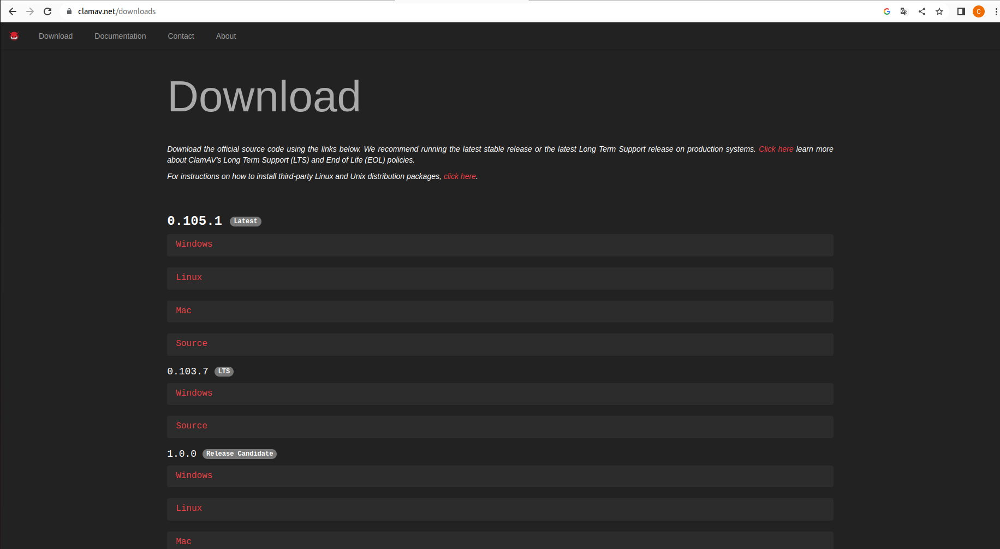
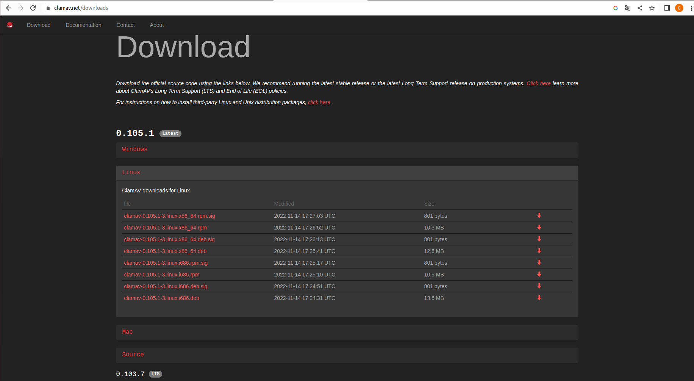
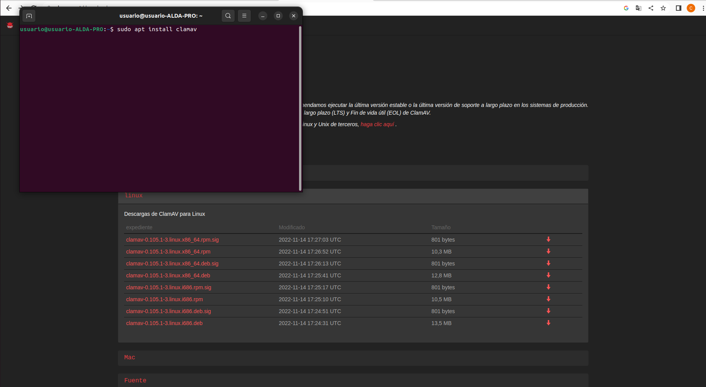
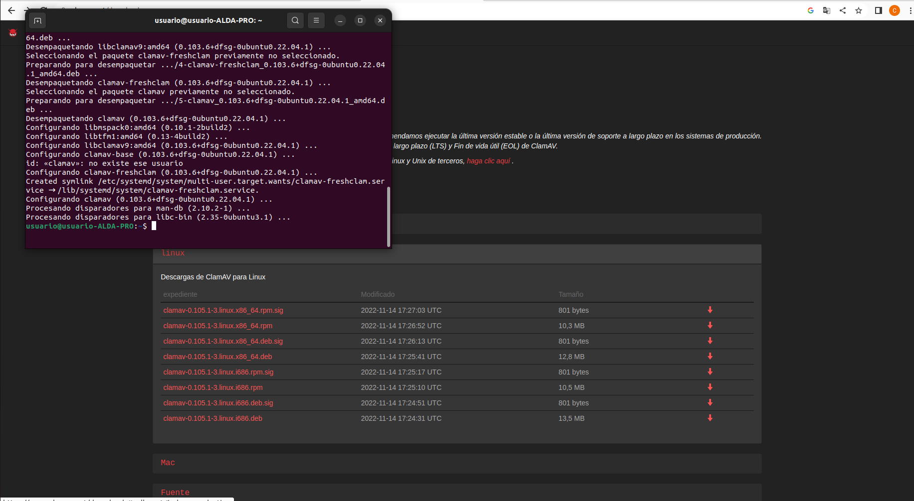
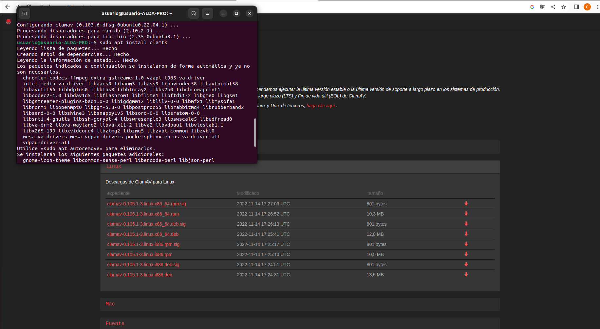
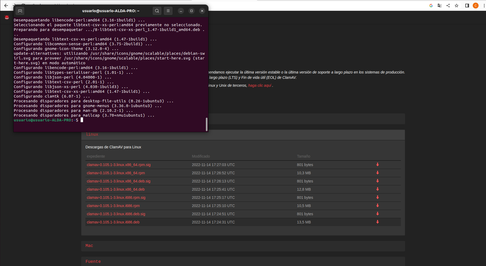

ClamAV
Tutorial de como descargar ClamAV para Windows/Ubuntu
Windows
1º Lo primero de todo es irnos a la página principal y seleccionar el S.O que queramos instalar.

2º Seleccionamos la versión que queramos y le daremos a descragar.

Ubuntu
1º Abriremos la terminal y pondremos esta serie de comandos. sudo apt install clamav.


2º sudo apt install clamtk

3º Y una vez lanzados los 2 comandos, tendremos el software instalado.
